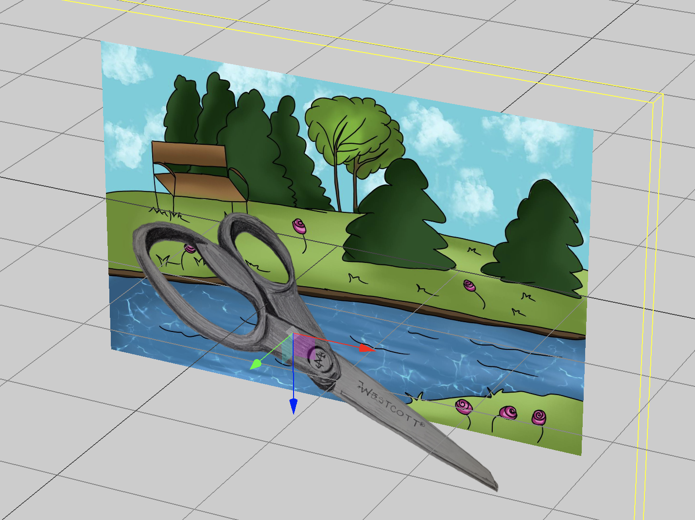

Scissors - Scissors In Space
Public Space
I chose a park as my space due to the juxtaposition of my chosen object and the idea of nature. Scissors are manufactured with steel and are mass produced to cut away at thing. A park on another hand, is natural, housing many forms of life and allowing things to grow and develop. I imagine these scissors to be quite large, and will serve as a bridge over the river, forcing organisms to cross it to get to the other side. It can symbolize how consumerism is destroying the environment.

Back